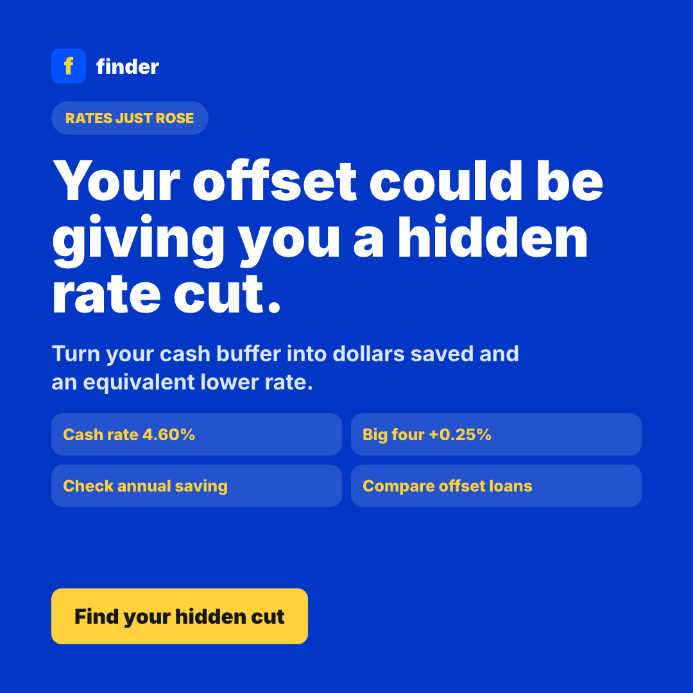
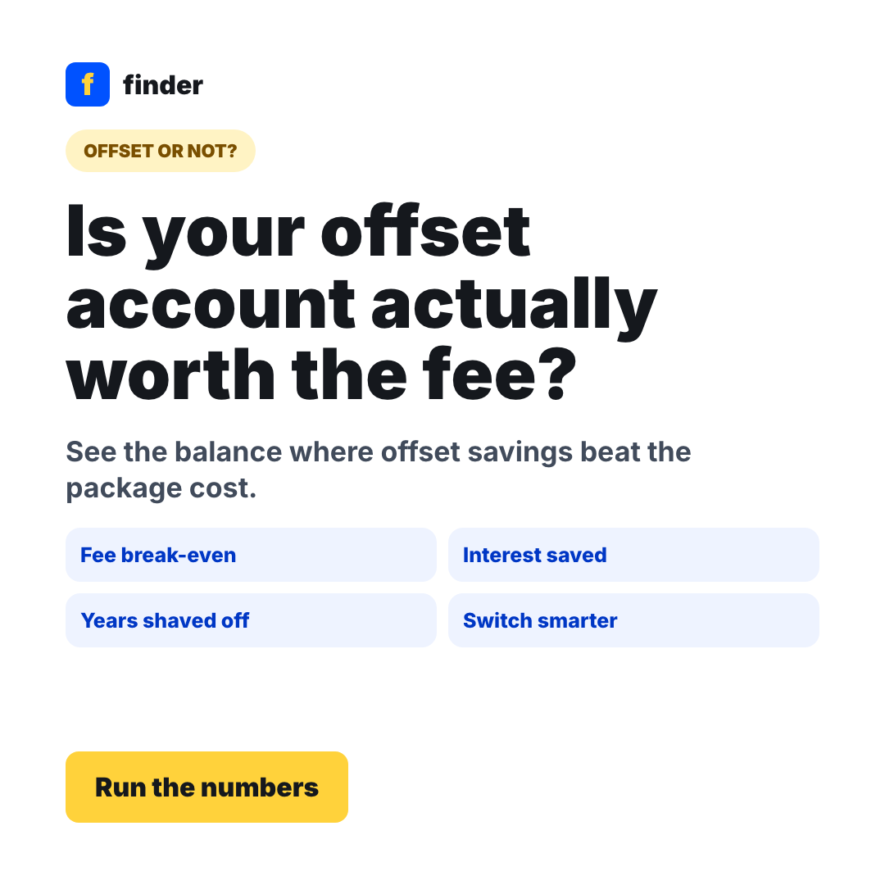

Measure the buffer
Ask loan balance, interest rate, offset balance, redraw balance, account fee, and likely cash access needs.
Rates are up, buffers matter
ABC reports the cash rate is now 4.60% and the big four have passed the September hike through to variable home loans. At the same time, offset and redraw balances are a live household buffer. This flow turns "should I use offset or redraw?" into a dollar saving and an equivalent rate-cut number people can actually feel.
Make offset and redraw concrete: show annual interest saved, equivalent rate cut, fee break-even, and the next best loan feature to compare.
Ask loan balance, interest rate, offset balance, redraw balance, account fee, and likely cash access needs.
Convert dollars saved into an equivalent interest-rate cut and show whether the feature fee is worth paying.
Send users to offset loans, redraw-friendly basic loans, or lower-rate refi options based on their break-even.
Square social variants for Meta, Instagram and partner/creator read-outs.

